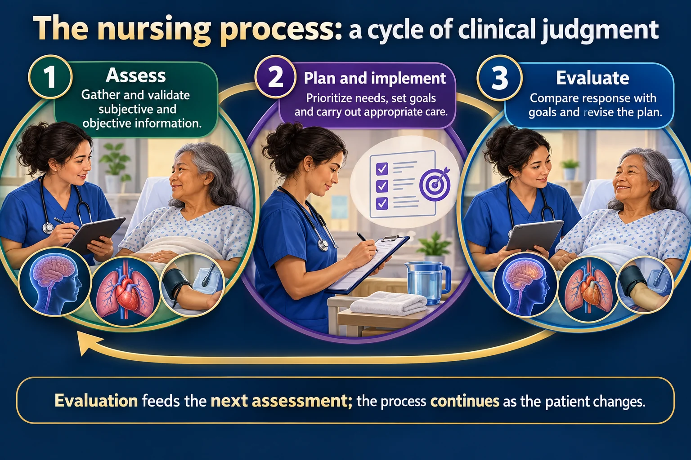

The Nursing Process I — Assessment · Diagnosis · Planning · Implementation · Evaluation
The nursing process is the systematic approach used to guide client care. It is the skeleton under every care plan, every clinical-judgment question and a huge share of NCLEX items. It is a circle, not a list — you never stop at Evaluation, you loop back and assess again.
📄 Simple Nursing original — opens in Drive →
Five steps, one loop. Learn the wheel first and every care-plan question stops being scary.
EXAM TIP Evaluation feeds straight back into Assessment. If the outcome was not met, you do not invent a new intervention out of thin air — you re-assess, then re-diagnose, then re-plan.

Evaluation feeds the next assessment; the process continues as the patient changes.
Assess
Gather and validate subjective and objective information.
Plan and implement
Prioritize needs, set goals and carry out appropriate care.
Evaluate
Compare response with goals and revise the plan.
Diagnosis
Identify nursing problems supported by assessment data.
Prioritization
Consider immediate threats, patient preferences and the clinical context.
Documentation
Record findings, actions, response and communication accurately.
Nursing process = “the systematic approach used to guide client care.”
It shapes clinical judgment about a client's physical & psychological status, and it also folds in the client's social factors, family, and community experiences.
Almost always ASSESS — A comes before D-P-I-E for a reason. You cannot diagnose or intervene on data you do not have.
The only exception: when the client is in immediate danger — an unwitnessed collapse, an active seizure, an obstructed airway, a disconnected ventilator. Then you act first (position, protect, call for help) and assess as you go.
Some texts (and the ANA Standards of Practice) split Planning in two and teach six steps:
Same process. ADOPIE just pulls “write the measurable outcome” out as its own step.
ADPIE is the spine. Two other pages are its arms and legs:
Assessment collects it. Diagnosis names the human response you are going to treat.
Subjective data is what the client reports. Objective data is what can be observed or measured.
Then validate (does the subjective match the objective?), cluster related findings, and document in the client's own words where possible.
Using the assessment data you collected, the goal is to address both actual and potential health problems for the client.
| 🩺 MEDICAL diagnosis | 👩⚕️ NURSING diagnosis |
|---|---|
| Made by the provider | Made by the RN |
| Names the disease — pneumonia, CHF, stroke | Names the human response to it — impaired gas exchange, activity intolerance, impaired swallowing |
| Stays the same until the disease resolves | Changes as the client changes — you rewrite it constantly |
| Treated with medicine & surgery | Treated with nursing interventions the RN can order independently |
A medical diagnosis is never a nursing diagnosis. “Pneumonia” is not something you can write on the care plan as the problem.
Format (PES): Problem related to Etiology as evidenced by Signs & symptoms.
e.g. Impaired gas exchange r/t alveolar-capillary membrane changes AEB SpO₂ 89%, crackles, restlessness.
CAUTION Physical needs always come before psychological needs, as outlined by Maslow's hierarchy. “We are always going to prioritize an airway issue before we treat an emotional one.”
Ask the question the source gives you: “What is going to kill your client the fastest?” That is what goes first on the care plan.
A client with pneumonia has an oxygen saturation of 89%. Which nursing diagnosis is most appropriate?
✅ Impaired gas exchange. Pneumonia is the medical diagnosis; the human response you can treat is the failure to move oxygen across the alveolar–capillary membrane, and the SpO₂ is your AEB evidence.
A client with Crohn's disease feels overwhelmed and has had no outside support since a recent divorce. Which nursing diagnoses fit the plan of care? (Select all that apply.)
Write a goal you could grade. Carry it out. Then be honest about whether it worked.
Develop an action plan with specific goals and the desired outcome of the plan — then always discuss the plan with the client to check that their perceived needs are being met.
What is the MOST appropriate way to assess whether the plan of care correlates with the client's perceived needs?
✅ Discuss the plan of care with the client.
Don't forget the client's opinion here — but make sure what they want is realistic.
⭐ Reassess immediately before you act. The blood pressure from two hours ago is not permission to give the antihypertensive now.
Evaluation is not “was the intervention done.” It is compare the client's actual response to the outcome criteria you wrote.